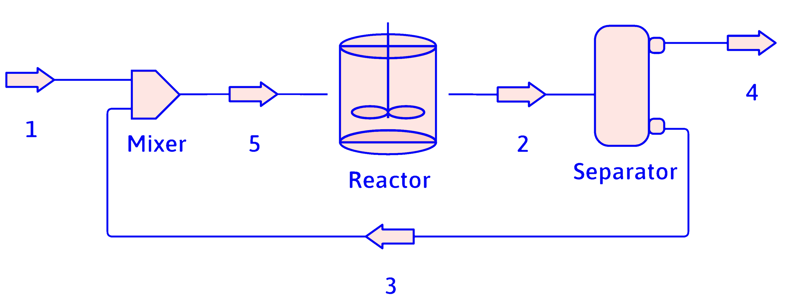
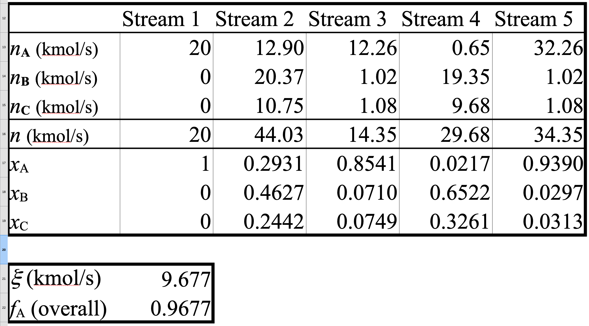
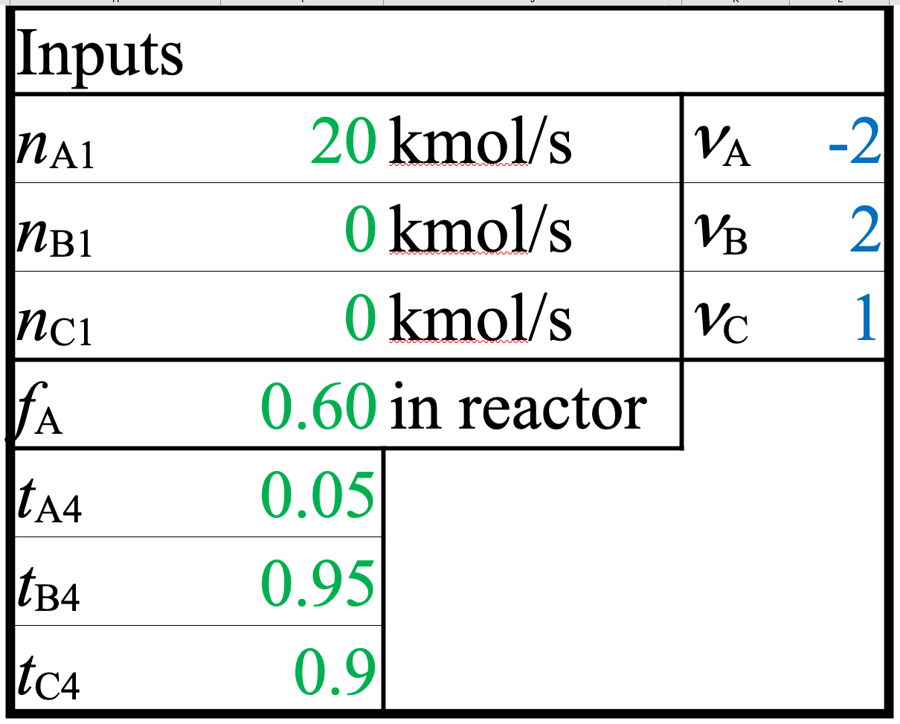
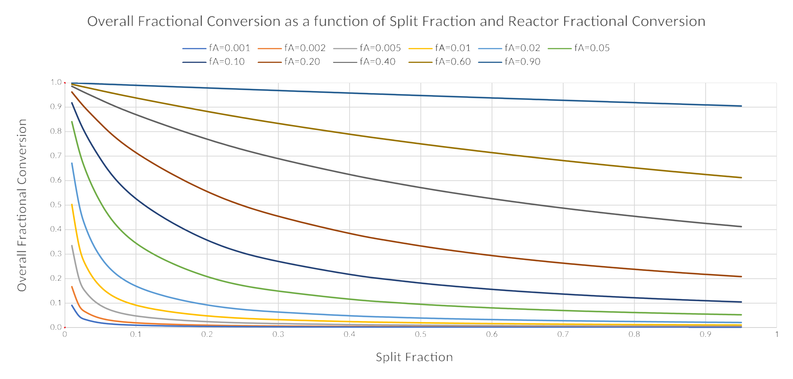
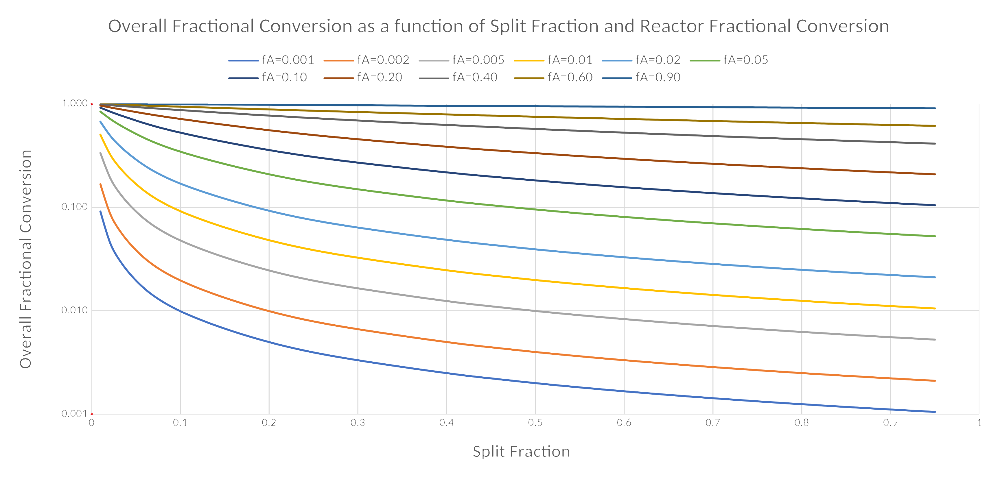

The Symbolic Meaning
of Recycling
Just the Facts
DOFPro Team

Recycle Example Symbolic Only
- An example of a PFD with a reactor, a separator, and recycle
- In terms of the labeled variables for the PFD (no numerical values during solution)
- Demonstrates the need to go completely around a recycle loop to solve the algebraic equations.
Recycle Example Symbolic Only

\(\nu_\mathrm{A} \mathrm{A} \rightarrow \nu_\mathrm{B} \mathrm{B} + \nu_\mathrm{C} \mathrm{C}\)
\(\mathrm{A}\)
\(\begin{array}{c}\mathrm{A}\\\mathrm{B}\\\mathrm{C}\end{array}\)
Assume that the knowns or givens are:
\(\dot{n}_\mathrm{A1}\), \(\dot{n}_\mathrm{B1}\), \(\dot{n}_\mathrm{C1}\),
\(f_\mathrm{A}\) (in reactor),
\(t_\mathrm{A4}\), \(t_\mathrm{C4}\), \(t_\mathrm{C4}\)
Find a full set of equations for all of the flows, extent of reaction, and overall conversion in terms of the knowns.
In general, you have to calculate a set of mass balances completely around the recycle loop before you can eliminate the unknowns. Each known will be circled, and each equation that has a single unknown in terms of knowns will be circled.
“A” Balance
\(\nu_\mathrm{A} \mathrm{A} \rightarrow \nu_\mathrm{B} \mathrm{B} + \nu_\mathrm{C} \mathrm{C}\)
\(\mathrm{A}\)
\(\begin{array}{c}\mathrm{A}\\\mathrm{B}\\\mathrm{C}\end{array}\)
Input
\(\ \ \ \ \dot{n}_\mathrm{A1} = \mathrm{given}\)
Mixer
\(\ \ \ \ \dot{n}_\mathrm{A5} = \dot{n}_\mathrm{A1} + \dot{n}_\mathrm{A3}\)
Reactor
\(\ \ \ \ \dot{n}_\mathrm{A2} = (1-f_\mathrm{A})\dot{n}_\mathrm{A5} = (1-f_\mathrm{A})(\dot{n}_\mathrm{A1} + \dot{n}_\mathrm{A3})\)
\(\ \ \ \ \dot{n}_\mathrm{A2} = \dot{n}_\mathrm{A5} + \nu_\mathrm{A} \dot{\xi} = \dot{n}_\mathrm{A1} + \dot{n}_\mathrm{A3}+ \nu_\mathrm{A} \dot{\xi}\)
or
\(\ \ \ \ \dot{\xi} = (\dot{n}_\mathrm{A2} - \dot{n}_\mathrm{A5})/\nu_\mathrm{A}\)
Separator
\(\ \ \ \ \dot{n}_\mathrm{A4} = t_\mathrm{A4} \dot{n}_\mathrm{A2} = t_\mathrm{A4} (1-f_\mathrm{A}) (\dot{n}_\mathrm{A1} + \dot{n}_\mathrm{A3})\)
\(\ \ \ \ \dot{n}_\mathrm{A3} = (1-t_\mathrm{A4}) \dot{n}_\mathrm{A2} = (1-t_\mathrm{A4}) (1-f_\mathrm{A}) (\dot{n}_\mathrm{A1} + \dot{n}_\mathrm{A3})\)
“A” Balance (cont.)
\(\nu_\mathrm{A} \mathrm{A} \rightarrow \nu_\mathrm{B} \mathrm{B} + \nu_\mathrm{C} \mathrm{C}\)
\(\mathrm{A}\)
\(\begin{array}{c}\mathrm{A}\\\mathrm{B}\\\mathrm{C}\end{array}\)
Separator (cont.)
\(\ \ \ \ \dot{n}_\mathrm{A3} = (1-t_\mathrm{A4}) (1-f_\mathrm{A}) (\dot{n}_\mathrm{A1} + \dot{n}_\mathrm{A3})\)
\(\ \ \ \ \implies \dot{n}_\mathrm{A3} = \dot{n}_\mathrm{A1} \left[\frac{(1-f_\mathrm{A}) (1-t_\mathrm{A4})}{f_\mathrm{A} + t_\mathrm{A4} - f_\mathrm{A} t_\mathrm{A4}}\right]\)
Once we have \(\dot{n}_\mathrm{A3}\),
\(\ \ \ \ \dot{n}_\mathrm{A5} = \dot{n}_\mathrm{A1} + \dot{n}_\mathrm{A3}\)
\(\ \ \ \ \dot{n}_\mathrm{A2} = (1-f_\mathrm{A}) \dot{n}_\mathrm{A5}\)
\(\ \ \ \ \dot{\xi} = (\dot{n}_\mathrm{A2} - \dot{n}_\mathrm{A5})/\nu_\mathrm{A}\)
“B” & “C” Balances
\(\nu_\mathrm{A} \mathrm{A} \rightarrow \nu_\mathrm{B} \mathrm{B} + \nu_\mathrm{C} \mathrm{C}\)
\(\mathrm{A}\)
\(\begin{array}{c}\mathrm{A}\\\mathrm{B}\\\mathrm{C}\end{array}\)
For \(\mathrm{B}\) and \(\mathrm{C}\) we’ll use extent of reaction. The \(\mathrm{B}\) and \(\mathrm{C}\) equations are identical except for the change from \(\mathrm{B}\) to \(\mathrm{C}\) subscripts.
Overall
\(\ \ \ \ \dot{n}_\mathrm{B4} = \dot{n}_\mathrm{B1} + \nu_\mathrm{B} \dot{\xi}\)
\(\ \ \ \ \dot{n}_\mathrm{C4} = \dot{n}_\mathrm{C1} + \nu_\mathrm{C} \dot{\xi}\)
Separator
\(\ \ \ \ \dot{n}_\mathrm{B2} = \frac{\dot{n}_\mathrm{B4}}{t_\mathrm{B4} }\)
\(\ \ \ \ \dot{n}_\mathrm{C2} = \frac{\dot{n}_\mathrm{C4}}{t_\mathrm{C4} }\)
\(\ \ \ \ \dot{n}_\mathrm{B3} = (1-t_\mathrm{B4}) \dot{n}_\mathrm{B2} = \frac{1-t_\mathrm{B4}}{t_\mathrm{B4}} \dot{n}_\mathrm{B4}\)
\(\ \ \ \ \dot{n}_\mathrm{C3} = (1-t_\mathrm{C4}) \dot{n}_\mathrm{C2} = \frac{1-t_\mathrm{C4}}{t_\mathrm{C4}} \dot{n}_\mathrm{C4}\)
Mixer
\(\ \ \ \ \dot{n}_\mathrm{B5} = \dot{n}_\mathrm{B1} + \dot{n}_\mathrm{B3}\)
\(\ \ \ \ \dot{n}_\mathrm{C5} = \dot{n}_\mathrm{C1} + \dot{n}_\mathrm{C3}\)
Summary
\(\nu_\mathrm{A} \mathrm{A} \rightarrow \nu_\mathrm{B} \mathrm{B} + \nu_\mathrm{C} \mathrm{C}\)
\(\mathrm{A}\)
\(\begin{array}{c}\mathrm{A}\\\mathrm{B}\\\mathrm{C}\end{array}\)
Finally, the overall fractional conversion of \(\mathrm{A}\), and the product flow rates
Overall Fractional Conversion
\(\ \ \ \ f_\text{A–overall} = 1-\frac{\dot{n}_\mathrm{A1}}{\dot{n}_\mathrm{A4}} = \frac{f_\mathrm{A}}{f_\mathrm{A} + t_\mathrm{A4} - f_\mathrm{A} t_\mathrm{A4}}\)
Output Flows (from overall and \(\dot{\xi}\))
\(\ \ \ \ \dot{n}_\mathrm{A4} = \dot{n}_\mathrm{A1} + \nu_\mathrm{A} \dot{\xi}\)
\(\ \ \ \ \dot{n}_\mathrm{B4} = \dot{n}_\mathrm{B1} + \nu_\mathrm{B} \dot{\xi}\)
\(\ \ \ \ \dot{n}_\mathrm{C4} = \dot{n}_\mathrm{C1} + \nu_\mathrm{C} \dot{\xi}\)
Spreadsheet Summary
\(\nu_\mathrm{A} \mathrm{A} \rightarrow \nu_\mathrm{B} \mathrm{B} + \nu_\mathrm{C} \mathrm{C}\)
\(\mathrm{A}\)
\(\begin{array}{c}\mathrm{A}\\\mathrm{B}\\\mathrm{C}\end{array}\)


Parametric Plot of \(f_\text{A–overall}\)
 
Linear
Scale
Log
Scale
The Takeaways
- It is possible to develop the general equations for a PFD with a reactor and a separator.
- As the fractional conversion in the reactor goes up, the overall fractional conversion goes up.
- As the split fraction of the reactant in the product stream goes down, the overall fractional conversion goes up.
Thanks for watching!
The Full Story companion video is in the link in the upper left. The next video in the series, How Did You Think I Would React?, is in the upper right. To learn more about Chemical and Thermal Processes, visit the website linked in the description.